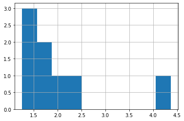

Events to DataFrame¶
ObsPlus provides a way to extract useful summary information from ObsPy objects in order to create dataframes. This transformation is lossy but very useful when the full complexity of the Catalog object isn’t warranted. By default the events_to_df function collects information the authors of ObsPlus have found useful, but it is fully extensible/customizable using the functionality of the DataFrameExtractor.
To demonstrate how the Catalog can be flattened into a table, let’s again use the Crandall catalog.
[1]:
import obspy
import numpy as np
from matplotlib import pyplot as plt
from obspy.clients.fdsn import Client
import obsplus
[2]:
crandall = obsplus.load_dataset('crandall_test')
cat = crandall.event_client.get_events()
ev_df = obsplus.events_to_df(cat)
ev_df.head()
downloading waveform data for crandall_test dataset ...
[2020-12-07 21:25:32,546] - obspy.clients.fdsn.mass_downloader - INFO: Initializing FDSN client(s) for http://service.iris.edu.
[2020-12-07 21:25:32,549] - obspy.clients.fdsn.mass_downloader - INFO: Successfully initialized 1 client(s): http://service.iris.edu.
[2020-12-07 21:25:32,550] - obspy.clients.fdsn.mass_downloader - INFO: Total acquired or preexisting stations: 0
[2020-12-07 21:25:32,552] - obspy.clients.fdsn.mass_downloader - INFO: Client 'http://service.iris.edu' - Requesting reliable availability.
[2020-12-07 21:25:36,029] - obspy.clients.fdsn.mass_downloader - INFO: Client 'http://service.iris.edu' - Successfully requested availability (3.48 seconds)
[2020-12-07 21:25:36,075] - obspy.clients.fdsn.mass_downloader - INFO: Client 'http://service.iris.edu' - Found 19 stations (57 channels).
[2020-12-07 21:25:36,079] - obspy.clients.fdsn.mass_downloader - INFO: Client 'http://service.iris.edu' - Will attempt to download data from 19 stations.
[2020-12-07 21:25:36,082] - obspy.clients.fdsn.mass_downloader - INFO: Client 'http://service.iris.edu' - Status for 57 time intervals/channels before downloading: NEEDS_DOWNLOADING
[2020-12-07 21:25:37,202] - obspy.clients.fdsn.mass_downloader - INFO: Client 'http://service.iris.edu' - Successfully downloaded 7 channels (of 7)
[2020-12-07 21:25:39,553] - obspy.clients.fdsn.mass_downloader - INFO: Client 'http://service.iris.edu' - Successfully downloaded 41 channels (of 50)
[2020-12-07 21:25:39,554] - obspy.clients.fdsn.mass_downloader - INFO: Client 'http://service.iris.edu' - Launching basic QC checks...
[2020-12-07 21:25:39,608] - obspy.clients.fdsn.mass_downloader - INFO: Client 'http://service.iris.edu' - Downloaded 0.4 MB [127.37 KB/sec] of data, 0.0 MB of which were discarded afterwards.
[2020-12-07 21:25:39,609] - obspy.clients.fdsn.mass_downloader - INFO: Client 'http://service.iris.edu' - Status for 9 time intervals/channels after downloading: DOWNLOAD_FAILED
[2020-12-07 21:25:39,609] - obspy.clients.fdsn.mass_downloader - INFO: Client 'http://service.iris.edu' - Status for 48 time intervals/channels after downloading: DOWNLOADED
[2020-12-07 21:25:39,764] - obspy.clients.fdsn.mass_downloader - INFO: Client 'http://service.iris.edu' - Successfully downloaded '/home/runner/opsdata/crandall_test/stations/TA.O18A.xml'.
[2020-12-07 21:25:39,775] - obspy.clients.fdsn.mass_downloader - INFO: Client 'http://service.iris.edu' - Successfully downloaded '/home/runner/opsdata/crandall_test/stations/TA.O15A.xml'.
[2020-12-07 21:25:39,777] - obspy.clients.fdsn.mass_downloader - INFO: Client 'http://service.iris.edu' - Successfully downloaded '/home/runner/opsdata/crandall_test/stations/TA.P16A.xml'.
[2020-12-07 21:25:39,922] - obspy.clients.fdsn.mass_downloader - INFO: Client 'http://service.iris.edu' - Successfully downloaded '/home/runner/opsdata/crandall_test/stations/TA.P15A.xml'.
[2020-12-07 21:25:39,925] - obspy.clients.fdsn.mass_downloader - INFO: Client 'http://service.iris.edu' - Successfully downloaded '/home/runner/opsdata/crandall_test/stations/TA.P17A.xml'.
[2020-12-07 21:25:39,934] - obspy.clients.fdsn.mass_downloader - INFO: Client 'http://service.iris.edu' - Successfully downloaded '/home/runner/opsdata/crandall_test/stations/TA.O16A.xml'.
[2020-12-07 21:25:40,060] - obspy.clients.fdsn.mass_downloader - INFO: Client 'http://service.iris.edu' - Successfully downloaded '/home/runner/opsdata/crandall_test/stations/TA.P18A.xml'.
[2020-12-07 21:25:40,077] - obspy.clients.fdsn.mass_downloader - INFO: Client 'http://service.iris.edu' - Successfully downloaded '/home/runner/opsdata/crandall_test/stations/TA.Q16A.xml'.
[2020-12-07 21:25:40,092] - obspy.clients.fdsn.mass_downloader - INFO: Client 'http://service.iris.edu' - Successfully downloaded '/home/runner/opsdata/crandall_test/stations/TA.R17A.xml'.
[2020-12-07 21:25:40,211] - obspy.clients.fdsn.mass_downloader - INFO: Client 'http://service.iris.edu' - Successfully downloaded '/home/runner/opsdata/crandall_test/stations/TA.Q15A.xml'.
[2020-12-07 21:25:40,242] - obspy.clients.fdsn.mass_downloader - INFO: Client 'http://service.iris.edu' - Successfully downloaded '/home/runner/opsdata/crandall_test/stations/UU.CTU.xml'.
[2020-12-07 21:25:40,244] - obspy.clients.fdsn.mass_downloader - INFO: Client 'http://service.iris.edu' - Successfully downloaded '/home/runner/opsdata/crandall_test/stations/TA.Q18A.xml'.
[2020-12-07 21:25:40,349] - obspy.clients.fdsn.mass_downloader - INFO: Client 'http://service.iris.edu' - Successfully downloaded '/home/runner/opsdata/crandall_test/stations/UU.MPU.xml'.
[2020-12-07 21:25:40,403] - obspy.clients.fdsn.mass_downloader - INFO: Client 'http://service.iris.edu' - Successfully downloaded '/home/runner/opsdata/crandall_test/stations/UU.SRU.xml'.
[2020-12-07 21:25:40,508] - obspy.clients.fdsn.mass_downloader - INFO: Client 'http://service.iris.edu' - Successfully downloaded '/home/runner/opsdata/crandall_test/stations/UU.NLU.xml'.
[2020-12-07 21:25:40,536] - obspy.clients.fdsn.mass_downloader - INFO: Client 'http://service.iris.edu' - Successfully downloaded '/home/runner/opsdata/crandall_test/stations/UU.TMU.xml'.
[2020-12-07 21:25:40,555] - obspy.clients.fdsn.mass_downloader - INFO: Client 'http://service.iris.edu' - Downloaded 16 station files [0.4 MB] in 0.9 seconds [460.33 KB/sec].
[2020-12-07 21:25:40,556] - obspy.clients.fdsn.mass_downloader - INFO: ============================== Final report
[2020-12-07 21:25:40,556] - obspy.clients.fdsn.mass_downloader - INFO: 0 MiniSEED files [0.0 MB] already existed.
[2020-12-07 21:25:40,557] - obspy.clients.fdsn.mass_downloader - INFO: 0 StationXML files [0.0 MB] already existed.
[2020-12-07 21:25:40,559] - obspy.clients.fdsn.mass_downloader - INFO: Client 'http://service.iris.edu' - Acquired 48 MiniSEED files [0.4 MB].
[2020-12-07 21:25:40,560] - obspy.clients.fdsn.mass_downloader - INFO: Client 'http://service.iris.edu' - Acquired 16 StationXML files [0.4 MB].
[2020-12-07 21:25:40,560] - obspy.clients.fdsn.mass_downloader - INFO: Downloaded 0.8 MB in total.
[2020-12-07 21:25:40,734] - obspy.clients.fdsn.mass_downloader - INFO: Initializing FDSN client(s) for http://service.iris.edu.
[2020-12-07 21:25:40,737] - obspy.clients.fdsn.mass_downloader - INFO: Successfully initialized 1 client(s): http://service.iris.edu.
[2020-12-07 21:25:40,737] - obspy.clients.fdsn.mass_downloader - INFO: Total acquired or preexisting stations: 0
[2020-12-07 21:25:40,739] - obspy.clients.fdsn.mass_downloader - INFO: Client 'http://service.iris.edu' - Requesting reliable availability.
[2020-12-07 21:25:44,345] - obspy.clients.fdsn.mass_downloader - INFO: Client 'http://service.iris.edu' - Successfully requested availability (3.61 seconds)
[2020-12-07 21:25:44,389] - obspy.clients.fdsn.mass_downloader - INFO: Client 'http://service.iris.edu' - Found 19 stations (57 channels).
[2020-12-07 21:25:44,393] - obspy.clients.fdsn.mass_downloader - INFO: Client 'http://service.iris.edu' - Will attempt to download data from 19 stations.
[2020-12-07 21:25:44,396] - obspy.clients.fdsn.mass_downloader - INFO: Client 'http://service.iris.edu' - Status for 57 time intervals/channels before downloading: NEEDS_DOWNLOADING
[2020-12-07 21:25:45,508] - obspy.clients.fdsn.mass_downloader - INFO: Client 'http://service.iris.edu' - Successfully downloaded 7 channels (of 7)
[2020-12-07 21:25:47,106] - obspy.clients.fdsn.mass_downloader - INFO: Client 'http://service.iris.edu' - Successfully downloaded 44 channels (of 50)
[2020-12-07 21:25:47,107] - obspy.clients.fdsn.mass_downloader - INFO: Client 'http://service.iris.edu' - Launching basic QC checks...
[2020-12-07 21:25:47,154] - obspy.clients.fdsn.mass_downloader - INFO: Client 'http://service.iris.edu' - Downloaded 0.3 MB [110.94 KB/sec] of data, 0.0 MB of which were discarded afterwards.
[2020-12-07 21:25:47,154] - obspy.clients.fdsn.mass_downloader - INFO: Client 'http://service.iris.edu' - Status for 6 time intervals/channels after downloading: DOWNLOAD_FAILED
[2020-12-07 21:25:47,155] - obspy.clients.fdsn.mass_downloader - INFO: Client 'http://service.iris.edu' - Status for 51 time intervals/channels after downloading: DOWNLOADED
[2020-12-07 21:25:47,337] - obspy.clients.fdsn.mass_downloader - INFO: Client 'http://service.iris.edu' - Successfully downloaded '/home/runner/opsdata/crandall_test/stations/TA.R16A.xml'.
[2020-12-07 21:25:47,339] - obspy.clients.fdsn.mass_downloader - INFO: Client 'http://service.iris.edu' - Downloaded 1 station files [0.0 MB] in 0.2 seconds [140.11 KB/sec].
[2020-12-07 21:25:47,340] - obspy.clients.fdsn.mass_downloader - INFO: ============================== Final report
[2020-12-07 21:25:47,341] - obspy.clients.fdsn.mass_downloader - INFO: 0 MiniSEED files [0.0 MB] already existed.
[2020-12-07 21:25:47,342] - obspy.clients.fdsn.mass_downloader - INFO: 16 StationXML files [0.4 MB] already existed.
[2020-12-07 21:25:47,344] - obspy.clients.fdsn.mass_downloader - INFO: Client 'http://service.iris.edu' - Acquired 51 MiniSEED files [0.3 MB].
[2020-12-07 21:25:47,345] - obspy.clients.fdsn.mass_downloader - INFO: Client 'http://service.iris.edu' - Acquired 1 StationXML files [0.0 MB].
[2020-12-07 21:25:47,346] - obspy.clients.fdsn.mass_downloader - INFO: Downloaded 0.3 MB in total.
[2020-12-07 21:25:47,498] - obspy.clients.fdsn.mass_downloader - INFO: Initializing FDSN client(s) for http://service.iris.edu.
[2020-12-07 21:25:47,500] - obspy.clients.fdsn.mass_downloader - INFO: Successfully initialized 1 client(s): http://service.iris.edu.
[2020-12-07 21:25:47,500] - obspy.clients.fdsn.mass_downloader - INFO: Total acquired or preexisting stations: 0
[2020-12-07 21:25:47,501] - obspy.clients.fdsn.mass_downloader - INFO: Client 'http://service.iris.edu' - Requesting reliable availability.
[2020-12-07 21:25:51,137] - obspy.clients.fdsn.mass_downloader - INFO: Client 'http://service.iris.edu' - Successfully requested availability (3.64 seconds)
[2020-12-07 21:25:51,179] - obspy.clients.fdsn.mass_downloader - INFO: Client 'http://service.iris.edu' - Found 19 stations (57 channels).
[2020-12-07 21:25:51,183] - obspy.clients.fdsn.mass_downloader - INFO: Client 'http://service.iris.edu' - Will attempt to download data from 19 stations.
[2020-12-07 21:25:51,186] - obspy.clients.fdsn.mass_downloader - INFO: Client 'http://service.iris.edu' - Status for 57 time intervals/channels before downloading: NEEDS_DOWNLOADING
[2020-12-07 21:25:51,910] - obspy.clients.fdsn.mass_downloader - INFO: Client 'http://service.iris.edu' - Successfully downloaded 7 channels (of 7)
[2020-12-07 21:25:53,122] - obspy.clients.fdsn.mass_downloader - INFO: Client 'http://service.iris.edu' - Successfully downloaded 44 channels (of 50)
[2020-12-07 21:25:53,123] - obspy.clients.fdsn.mass_downloader - INFO: Client 'http://service.iris.edu' - Launching basic QC checks...
[2020-12-07 21:25:53,173] - obspy.clients.fdsn.mass_downloader - INFO: Client 'http://service.iris.edu' - Downloaded 0.3 MB [163.83 KB/sec] of data, 0.0 MB of which were discarded afterwards.
[2020-12-07 21:25:53,174] - obspy.clients.fdsn.mass_downloader - INFO: Client 'http://service.iris.edu' - Status for 6 time intervals/channels after downloading: DOWNLOAD_FAILED
[2020-12-07 21:25:53,175] - obspy.clients.fdsn.mass_downloader - INFO: Client 'http://service.iris.edu' - Status for 51 time intervals/channels after downloading: DOWNLOADED
[2020-12-07 21:25:53,196] - obspy.clients.fdsn.mass_downloader - INFO: Client 'http://service.iris.edu' - No station information to download.
[2020-12-07 21:25:53,196] - obspy.clients.fdsn.mass_downloader - INFO: ============================== Final report
[2020-12-07 21:25:53,197] - obspy.clients.fdsn.mass_downloader - INFO: 0 MiniSEED files [0.0 MB] already existed.
[2020-12-07 21:25:53,198] - obspy.clients.fdsn.mass_downloader - INFO: 17 StationXML files [0.4 MB] already existed.
[2020-12-07 21:25:53,199] - obspy.clients.fdsn.mass_downloader - INFO: Client 'http://service.iris.edu' - Acquired 51 MiniSEED files [0.3 MB].
[2020-12-07 21:25:53,199] - obspy.clients.fdsn.mass_downloader - INFO: Client 'http://service.iris.edu' - Acquired 0 StationXML files [0.0 MB].
[2020-12-07 21:25:53,202] - obspy.clients.fdsn.mass_downloader - INFO: Downloaded 0.3 MB in total.
[2020-12-07 21:25:53,361] - obspy.clients.fdsn.mass_downloader - INFO: Initializing FDSN client(s) for http://service.iris.edu.
[2020-12-07 21:25:53,364] - obspy.clients.fdsn.mass_downloader - INFO: Successfully initialized 1 client(s): http://service.iris.edu.
[2020-12-07 21:25:53,364] - obspy.clients.fdsn.mass_downloader - INFO: Total acquired or preexisting stations: 0
[2020-12-07 21:25:53,365] - obspy.clients.fdsn.mass_downloader - INFO: Client 'http://service.iris.edu' - Requesting reliable availability.
[2020-12-07 21:25:57,188] - obspy.clients.fdsn.mass_downloader - INFO: Client 'http://service.iris.edu' - Successfully requested availability (3.82 seconds)
[2020-12-07 21:25:57,231] - obspy.clients.fdsn.mass_downloader - INFO: Client 'http://service.iris.edu' - Found 19 stations (57 channels).
[2020-12-07 21:25:57,235] - obspy.clients.fdsn.mass_downloader - INFO: Client 'http://service.iris.edu' - Will attempt to download data from 19 stations.
[2020-12-07 21:25:57,239] - obspy.clients.fdsn.mass_downloader - INFO: Client 'http://service.iris.edu' - Status for 57 time intervals/channels before downloading: NEEDS_DOWNLOADING
[2020-12-07 21:25:58,024] - obspy.clients.fdsn.mass_downloader - INFO: Client 'http://service.iris.edu' - Successfully downloaded 7 channels (of 7)
[2020-12-07 21:25:59,100] - obspy.clients.fdsn.mass_downloader - INFO: Client 'http://service.iris.edu' - Successfully downloaded 44 channels (of 50)
[2020-12-07 21:25:59,101] - obspy.clients.fdsn.mass_downloader - INFO: Client 'http://service.iris.edu' - Launching basic QC checks...
[2020-12-07 21:25:59,151] - obspy.clients.fdsn.mass_downloader - INFO: Client 'http://service.iris.edu' - Downloaded 0.3 MB [172.02 KB/sec] of data, 0.0 MB of which were discarded afterwards.
[2020-12-07 21:25:59,151] - obspy.clients.fdsn.mass_downloader - INFO: Client 'http://service.iris.edu' - Status for 6 time intervals/channels after downloading: DOWNLOAD_FAILED
[2020-12-07 21:25:59,153] - obspy.clients.fdsn.mass_downloader - INFO: Client 'http://service.iris.edu' - Status for 51 time intervals/channels after downloading: DOWNLOADED
[2020-12-07 21:25:59,173] - obspy.clients.fdsn.mass_downloader - INFO: Client 'http://service.iris.edu' - No station information to download.
[2020-12-07 21:25:59,174] - obspy.clients.fdsn.mass_downloader - INFO: ============================== Final report
[2020-12-07 21:25:59,175] - obspy.clients.fdsn.mass_downloader - INFO: 0 MiniSEED files [0.0 MB] already existed.
[2020-12-07 21:25:59,176] - obspy.clients.fdsn.mass_downloader - INFO: 17 StationXML files [0.4 MB] already existed.
[2020-12-07 21:25:59,177] - obspy.clients.fdsn.mass_downloader - INFO: Client 'http://service.iris.edu' - Acquired 51 MiniSEED files [0.3 MB].
[2020-12-07 21:25:59,178] - obspy.clients.fdsn.mass_downloader - INFO: Client 'http://service.iris.edu' - Acquired 0 StationXML files [0.0 MB].
[2020-12-07 21:25:59,178] - obspy.clients.fdsn.mass_downloader - INFO: Downloaded 0.3 MB in total.
[2020-12-07 21:25:59,330] - obspy.clients.fdsn.mass_downloader - INFO: Initializing FDSN client(s) for http://service.iris.edu.
[2020-12-07 21:25:59,332] - obspy.clients.fdsn.mass_downloader - INFO: Successfully initialized 1 client(s): http://service.iris.edu.
[2020-12-07 21:25:59,333] - obspy.clients.fdsn.mass_downloader - INFO: Total acquired or preexisting stations: 0
[2020-12-07 21:25:59,333] - obspy.clients.fdsn.mass_downloader - INFO: Client 'http://service.iris.edu' - Requesting reliable availability.
[2020-12-07 21:26:03,145] - obspy.clients.fdsn.mass_downloader - INFO: Client 'http://service.iris.edu' - Successfully requested availability (3.81 seconds)
[2020-12-07 21:26:03,188] - obspy.clients.fdsn.mass_downloader - INFO: Client 'http://service.iris.edu' - Found 19 stations (57 channels).
[2020-12-07 21:26:03,192] - obspy.clients.fdsn.mass_downloader - INFO: Client 'http://service.iris.edu' - Will attempt to download data from 19 stations.
[2020-12-07 21:26:03,195] - obspy.clients.fdsn.mass_downloader - INFO: Client 'http://service.iris.edu' - Status for 57 time intervals/channels before downloading: NEEDS_DOWNLOADING
[2020-12-07 21:26:03,955] - obspy.clients.fdsn.mass_downloader - INFO: Client 'http://service.iris.edu' - Successfully downloaded 7 channels (of 7)
[2020-12-07 21:26:05,165] - obspy.clients.fdsn.mass_downloader - INFO: Client 'http://service.iris.edu' - Successfully downloaded 44 channels (of 50)
[2020-12-07 21:26:05,166] - obspy.clients.fdsn.mass_downloader - INFO: Client 'http://service.iris.edu' - Launching basic QC checks...
[2020-12-07 21:26:05,219] - obspy.clients.fdsn.mass_downloader - INFO: Client 'http://service.iris.edu' - Downloaded 0.3 MB [165.28 KB/sec] of data, 0.0 MB of which were discarded afterwards.
[2020-12-07 21:26:05,219] - obspy.clients.fdsn.mass_downloader - INFO: Client 'http://service.iris.edu' - Status for 6 time intervals/channels after downloading: DOWNLOAD_FAILED
[2020-12-07 21:26:05,220] - obspy.clients.fdsn.mass_downloader - INFO: Client 'http://service.iris.edu' - Status for 51 time intervals/channels after downloading: DOWNLOADED
[2020-12-07 21:26:05,243] - obspy.clients.fdsn.mass_downloader - INFO: Client 'http://service.iris.edu' - No station information to download.
[2020-12-07 21:26:05,244] - obspy.clients.fdsn.mass_downloader - INFO: ============================== Final report
[2020-12-07 21:26:05,245] - obspy.clients.fdsn.mass_downloader - INFO: 0 MiniSEED files [0.0 MB] already existed.
[2020-12-07 21:26:05,247] - obspy.clients.fdsn.mass_downloader - INFO: 17 StationXML files [0.4 MB] already existed.
[2020-12-07 21:26:05,249] - obspy.clients.fdsn.mass_downloader - INFO: Client 'http://service.iris.edu' - Acquired 51 MiniSEED files [0.3 MB].
[2020-12-07 21:26:05,250] - obspy.clients.fdsn.mass_downloader - INFO: Client 'http://service.iris.edu' - Acquired 0 StationXML files [0.0 MB].
[2020-12-07 21:26:05,251] - obspy.clients.fdsn.mass_downloader - INFO: Downloaded 0.3 MB in total.
[2020-12-07 21:26:05,412] - obspy.clients.fdsn.mass_downloader - INFO: Initializing FDSN client(s) for http://service.iris.edu.
[2020-12-07 21:26:05,415] - obspy.clients.fdsn.mass_downloader - INFO: Successfully initialized 1 client(s): http://service.iris.edu.
[2020-12-07 21:26:05,415] - obspy.clients.fdsn.mass_downloader - INFO: Total acquired or preexisting stations: 0
[2020-12-07 21:26:05,417] - obspy.clients.fdsn.mass_downloader - INFO: Client 'http://service.iris.edu' - Requesting reliable availability.
[2020-12-07 21:26:09,197] - obspy.clients.fdsn.mass_downloader - INFO: Client 'http://service.iris.edu' - Successfully requested availability (3.78 seconds)
[2020-12-07 21:26:09,249] - obspy.clients.fdsn.mass_downloader - INFO: Client 'http://service.iris.edu' - Found 19 stations (57 channels).
[2020-12-07 21:26:09,253] - obspy.clients.fdsn.mass_downloader - INFO: Client 'http://service.iris.edu' - Will attempt to download data from 19 stations.
[2020-12-07 21:26:09,256] - obspy.clients.fdsn.mass_downloader - INFO: Client 'http://service.iris.edu' - Status for 57 time intervals/channels before downloading: NEEDS_DOWNLOADING
[2020-12-07 21:26:09,985] - obspy.clients.fdsn.mass_downloader - INFO: Client 'http://service.iris.edu' - Successfully downloaded 7 channels (of 7)
[2020-12-07 21:26:11,038] - obspy.clients.fdsn.mass_downloader - INFO: Client 'http://service.iris.edu' - Successfully downloaded 41 channels (of 50)
[2020-12-07 21:26:11,039] - obspy.clients.fdsn.mass_downloader - INFO: Client 'http://service.iris.edu' - Launching basic QC checks...
[2020-12-07 21:26:11,091] - obspy.clients.fdsn.mass_downloader - INFO: Client 'http://service.iris.edu' - Downloaded 0.3 MB [160.66 KB/sec] of data, 0.0 MB of which were discarded afterwards.
[2020-12-07 21:26:11,092] - obspy.clients.fdsn.mass_downloader - INFO: Client 'http://service.iris.edu' - Status for 9 time intervals/channels after downloading: DOWNLOAD_FAILED
[2020-12-07 21:26:11,093] - obspy.clients.fdsn.mass_downloader - INFO: Client 'http://service.iris.edu' - Status for 48 time intervals/channels after downloading: DOWNLOADED
[2020-12-07 21:26:11,119] - obspy.clients.fdsn.mass_downloader - INFO: Client 'http://service.iris.edu' - No station information to download.
[2020-12-07 21:26:11,119] - obspy.clients.fdsn.mass_downloader - INFO: ============================== Final report
[2020-12-07 21:26:11,120] - obspy.clients.fdsn.mass_downloader - INFO: 0 MiniSEED files [0.0 MB] already existed.
[2020-12-07 21:26:11,121] - obspy.clients.fdsn.mass_downloader - INFO: 16 StationXML files [0.4 MB] already existed.
[2020-12-07 21:26:11,122] - obspy.clients.fdsn.mass_downloader - INFO: Client 'http://service.iris.edu' - Acquired 48 MiniSEED files [0.3 MB].
[2020-12-07 21:26:11,123] - obspy.clients.fdsn.mass_downloader - INFO: Client 'http://service.iris.edu' - Acquired 0 StationXML files [0.0 MB].
[2020-12-07 21:26:11,124] - obspy.clients.fdsn.mass_downloader - INFO: Downloaded 0.3 MB in total.
[2020-12-07 21:26:11,279] - obspy.clients.fdsn.mass_downloader - INFO: Initializing FDSN client(s) for http://service.iris.edu.
[2020-12-07 21:26:11,281] - obspy.clients.fdsn.mass_downloader - INFO: Successfully initialized 1 client(s): http://service.iris.edu.
[2020-12-07 21:26:11,281] - obspy.clients.fdsn.mass_downloader - INFO: Total acquired or preexisting stations: 0
[2020-12-07 21:26:11,283] - obspy.clients.fdsn.mass_downloader - INFO: Client 'http://service.iris.edu' - Requesting reliable availability.
[2020-12-07 21:26:14,924] - obspy.clients.fdsn.mass_downloader - INFO: Client 'http://service.iris.edu' - Successfully requested availability (3.64 seconds)
[2020-12-07 21:26:14,968] - obspy.clients.fdsn.mass_downloader - INFO: Client 'http://service.iris.edu' - Found 19 stations (57 channels).
[2020-12-07 21:26:14,973] - obspy.clients.fdsn.mass_downloader - INFO: Client 'http://service.iris.edu' - Will attempt to download data from 19 stations.
[2020-12-07 21:26:14,976] - obspy.clients.fdsn.mass_downloader - INFO: Client 'http://service.iris.edu' - Status for 57 time intervals/channels before downloading: NEEDS_DOWNLOADING
[2020-12-07 21:26:15,782] - obspy.clients.fdsn.mass_downloader - INFO: Client 'http://service.iris.edu' - Successfully downloaded 7 channels (of 7)
[2020-12-07 21:26:16,831] - obspy.clients.fdsn.mass_downloader - INFO: Client 'http://service.iris.edu' - Successfully downloaded 44 channels (of 50)
[2020-12-07 21:26:16,834] - obspy.clients.fdsn.mass_downloader - INFO: Client 'http://service.iris.edu' - Launching basic QC checks...
[2020-12-07 21:26:16,886] - obspy.clients.fdsn.mass_downloader - INFO: Client 'http://service.iris.edu' - Downloaded 0.3 MB [172.67 KB/sec] of data, 0.0 MB of which were discarded afterwards.
[2020-12-07 21:26:16,887] - obspy.clients.fdsn.mass_downloader - INFO: Client 'http://service.iris.edu' - Status for 6 time intervals/channels after downloading: DOWNLOAD_FAILED
[2020-12-07 21:26:16,887] - obspy.clients.fdsn.mass_downloader - INFO: Client 'http://service.iris.edu' - Status for 51 time intervals/channels after downloading: DOWNLOADED
[2020-12-07 21:26:16,907] - obspy.clients.fdsn.mass_downloader - INFO: Client 'http://service.iris.edu' - No station information to download.
[2020-12-07 21:26:16,908] - obspy.clients.fdsn.mass_downloader - INFO: ============================== Final report
[2020-12-07 21:26:16,909] - obspy.clients.fdsn.mass_downloader - INFO: 0 MiniSEED files [0.0 MB] already existed.
[2020-12-07 21:26:16,910] - obspy.clients.fdsn.mass_downloader - INFO: 17 StationXML files [0.4 MB] already existed.
[2020-12-07 21:26:16,911] - obspy.clients.fdsn.mass_downloader - INFO: Client 'http://service.iris.edu' - Acquired 51 MiniSEED files [0.3 MB].
[2020-12-07 21:26:16,912] - obspy.clients.fdsn.mass_downloader - INFO: Client 'http://service.iris.edu' - Acquired 0 StationXML files [0.0 MB].
[2020-12-07 21:26:16,913] - obspy.clients.fdsn.mass_downloader - INFO: Downloaded 0.3 MB in total.
[2020-12-07 21:26:17,056] - obspy.clients.fdsn.mass_downloader - INFO: Initializing FDSN client(s) for http://service.iris.edu.
[2020-12-07 21:26:17,058] - obspy.clients.fdsn.mass_downloader - INFO: Successfully initialized 1 client(s): http://service.iris.edu.
[2020-12-07 21:26:17,058] - obspy.clients.fdsn.mass_downloader - INFO: Total acquired or preexisting stations: 0
[2020-12-07 21:26:17,059] - obspy.clients.fdsn.mass_downloader - INFO: Client 'http://service.iris.edu' - Requesting reliable availability.
[2020-12-07 21:26:20,658] - obspy.clients.fdsn.mass_downloader - INFO: Client 'http://service.iris.edu' - Successfully requested availability (3.60 seconds)
[2020-12-07 21:26:20,701] - obspy.clients.fdsn.mass_downloader - INFO: Client 'http://service.iris.edu' - Found 19 stations (57 channels).
[2020-12-07 21:26:20,705] - obspy.clients.fdsn.mass_downloader - INFO: Client 'http://service.iris.edu' - Will attempt to download data from 19 stations.
[2020-12-07 21:26:20,708] - obspy.clients.fdsn.mass_downloader - INFO: Client 'http://service.iris.edu' - Status for 57 time intervals/channels before downloading: NEEDS_DOWNLOADING
[2020-12-07 21:26:21,570] - obspy.clients.fdsn.mass_downloader - INFO: Client 'http://service.iris.edu' - Successfully downloaded 7 channels (of 7)
[2020-12-07 21:26:22,844] - obspy.clients.fdsn.mass_downloader - INFO: Client 'http://service.iris.edu' - Successfully downloaded 41 channels (of 50)
[2020-12-07 21:26:22,845] - obspy.clients.fdsn.mass_downloader - INFO: Client 'http://service.iris.edu' - Launching basic QC checks...
[2020-12-07 21:26:22,891] - obspy.clients.fdsn.mass_downloader - INFO: Client 'http://service.iris.edu' - Downloaded 0.3 MB [147.80 KB/sec] of data, 0.0 MB of which were discarded afterwards.
[2020-12-07 21:26:22,892] - obspy.clients.fdsn.mass_downloader - INFO: Client 'http://service.iris.edu' - Status for 9 time intervals/channels after downloading: DOWNLOAD_FAILED
[2020-12-07 21:26:22,892] - obspy.clients.fdsn.mass_downloader - INFO: Client 'http://service.iris.edu' - Status for 48 time intervals/channels after downloading: DOWNLOADED
[2020-12-07 21:26:22,913] - obspy.clients.fdsn.mass_downloader - INFO: Client 'http://service.iris.edu' - No station information to download.
[2020-12-07 21:26:22,914] - obspy.clients.fdsn.mass_downloader - INFO: ============================== Final report
[2020-12-07 21:26:22,914] - obspy.clients.fdsn.mass_downloader - INFO: 0 MiniSEED files [0.0 MB] already existed.
[2020-12-07 21:26:22,916] - obspy.clients.fdsn.mass_downloader - INFO: 16 StationXML files [0.4 MB] already existed.
[2020-12-07 21:26:22,917] - obspy.clients.fdsn.mass_downloader - INFO: Client 'http://service.iris.edu' - Acquired 48 MiniSEED files [0.3 MB].
[2020-12-07 21:26:22,917] - obspy.clients.fdsn.mass_downloader - INFO: Client 'http://service.iris.edu' - Acquired 0 StationXML files [0.0 MB].
[2020-12-07 21:26:22,918] - obspy.clients.fdsn.mass_downloader - INFO: Downloaded 0.3 MB in total.
finished downloading waveform data for crandall_test
downloading station data for crandall_test dataset ...
[2020-12-07 21:26:24,476] - obspy.clients.fdsn.mass_downloader - INFO: Initializing FDSN client(s) for http://service.iris.edu.
[2020-12-07 21:26:24,479] - obspy.clients.fdsn.mass_downloader - INFO: Successfully initialized 1 client(s): http://service.iris.edu.
[2020-12-07 21:26:24,480] - obspy.clients.fdsn.mass_downloader - INFO: Total acquired or preexisting stations: 0
[2020-12-07 21:26:24,480] - obspy.clients.fdsn.mass_downloader - INFO: Client 'http://service.iris.edu' - Requesting reliable availability.
[2020-12-07 21:26:28,206] - obspy.clients.fdsn.mass_downloader - INFO: Client 'http://service.iris.edu' - Successfully requested availability (3.72 seconds)
[2020-12-07 21:26:28,258] - obspy.clients.fdsn.mass_downloader - INFO: Client 'http://service.iris.edu' - Found 19 stations (57 channels).
[2020-12-07 21:26:28,263] - obspy.clients.fdsn.mass_downloader - INFO: Client 'http://service.iris.edu' - Will attempt to download data from 19 stations.
[2020-12-07 21:26:28,266] - obspy.clients.fdsn.mass_downloader - INFO: Client 'http://service.iris.edu' - Status for 48 time intervals/channels before downloading: EXISTS
[2020-12-07 21:26:28,267] - obspy.clients.fdsn.mass_downloader - INFO: Client 'http://service.iris.edu' - Status for 9 time intervals/channels before downloading: NEEDS_DOWNLOADING
[2020-12-07 21:26:28,772] - obspy.clients.fdsn.mass_downloader - INFO: Client 'http://service.iris.edu' - No data available for request.
[2020-12-07 21:26:28,773] - obspy.clients.fdsn.mass_downloader - INFO: Client 'http://service.iris.edu' - Launching basic QC checks...
[2020-12-07 21:26:28,774] - obspy.clients.fdsn.mass_downloader - INFO: Client 'http://service.iris.edu' - Downloaded 0.0 MB [0.00 KB/sec] of data, 0.0 MB of which were discarded afterwards.
[2020-12-07 21:26:28,775] - obspy.clients.fdsn.mass_downloader - INFO: Client 'http://service.iris.edu' - Status for 9 time intervals/channels after downloading: DOWNLOAD_FAILED
[2020-12-07 21:26:28,775] - obspy.clients.fdsn.mass_downloader - INFO: Client 'http://service.iris.edu' - Status for 48 time intervals/channels after downloading: EXISTS
[2020-12-07 21:26:28,796] - obspy.clients.fdsn.mass_downloader - INFO: Client 'http://service.iris.edu' - No station information to download.
[2020-12-07 21:26:28,797] - obspy.clients.fdsn.mass_downloader - INFO: ============================== Final report
[2020-12-07 21:26:28,798] - obspy.clients.fdsn.mass_downloader - INFO: 48 MiniSEED files [0.4 MB] already existed.
[2020-12-07 21:26:28,799] - obspy.clients.fdsn.mass_downloader - INFO: 16 StationXML files [0.4 MB] already existed.
[2020-12-07 21:26:28,799] - obspy.clients.fdsn.mass_downloader - INFO: Client 'http://service.iris.edu' - Acquired 0 MiniSEED files [0.0 MB].
[2020-12-07 21:26:28,800] - obspy.clients.fdsn.mass_downloader - INFO: Client 'http://service.iris.edu' - Acquired 0 StationXML files [0.0 MB].
[2020-12-07 21:26:28,800] - obspy.clients.fdsn.mass_downloader - INFO: Downloaded 0.0 MB in total.
[2020-12-07 21:26:28,881] - obspy.clients.fdsn.mass_downloader - INFO: Initializing FDSN client(s) for http://service.iris.edu.
[2020-12-07 21:26:28,883] - obspy.clients.fdsn.mass_downloader - INFO: Successfully initialized 1 client(s): http://service.iris.edu.
[2020-12-07 21:26:28,883] - obspy.clients.fdsn.mass_downloader - INFO: Total acquired or preexisting stations: 0
[2020-12-07 21:26:28,884] - obspy.clients.fdsn.mass_downloader - INFO: Client 'http://service.iris.edu' - Requesting reliable availability.
[2020-12-07 21:26:32,718] - obspy.clients.fdsn.mass_downloader - INFO: Client 'http://service.iris.edu' - Successfully requested availability (3.83 seconds)
[2020-12-07 21:26:32,764] - obspy.clients.fdsn.mass_downloader - INFO: Client 'http://service.iris.edu' - Found 19 stations (57 channels).
[2020-12-07 21:26:32,769] - obspy.clients.fdsn.mass_downloader - INFO: Client 'http://service.iris.edu' - Will attempt to download data from 19 stations.
[2020-12-07 21:26:32,771] - obspy.clients.fdsn.mass_downloader - INFO: Client 'http://service.iris.edu' - Status for 51 time intervals/channels before downloading: EXISTS
[2020-12-07 21:26:32,772] - obspy.clients.fdsn.mass_downloader - INFO: Client 'http://service.iris.edu' - Status for 6 time intervals/channels before downloading: NEEDS_DOWNLOADING
[2020-12-07 21:26:33,571] - obspy.clients.fdsn.mass_downloader - INFO: Client 'http://service.iris.edu' - No data available for request.
[2020-12-07 21:26:33,572] - obspy.clients.fdsn.mass_downloader - INFO: Client 'http://service.iris.edu' - Launching basic QC checks...
[2020-12-07 21:26:33,573] - obspy.clients.fdsn.mass_downloader - INFO: Client 'http://service.iris.edu' - Downloaded 0.0 MB [0.00 KB/sec] of data, 0.0 MB of which were discarded afterwards.
[2020-12-07 21:26:33,573] - obspy.clients.fdsn.mass_downloader - INFO: Client 'http://service.iris.edu' - Status for 6 time intervals/channels after downloading: DOWNLOAD_FAILED
[2020-12-07 21:26:33,574] - obspy.clients.fdsn.mass_downloader - INFO: Client 'http://service.iris.edu' - Status for 51 time intervals/channels after downloading: EXISTS
[2020-12-07 21:26:33,594] - obspy.clients.fdsn.mass_downloader - INFO: Client 'http://service.iris.edu' - No station information to download.
[2020-12-07 21:26:33,595] - obspy.clients.fdsn.mass_downloader - INFO: ============================== Final report
[2020-12-07 21:26:33,596] - obspy.clients.fdsn.mass_downloader - INFO: 51 MiniSEED files [0.3 MB] already existed.
[2020-12-07 21:26:33,597] - obspy.clients.fdsn.mass_downloader - INFO: 17 StationXML files [0.4 MB] already existed.
[2020-12-07 21:26:33,597] - obspy.clients.fdsn.mass_downloader - INFO: Client 'http://service.iris.edu' - Acquired 0 MiniSEED files [0.0 MB].
[2020-12-07 21:26:33,598] - obspy.clients.fdsn.mass_downloader - INFO: Client 'http://service.iris.edu' - Acquired 0 StationXML files [0.0 MB].
[2020-12-07 21:26:33,599] - obspy.clients.fdsn.mass_downloader - INFO: Downloaded 0.0 MB in total.
[2020-12-07 21:26:33,674] - obspy.clients.fdsn.mass_downloader - INFO: Initializing FDSN client(s) for http://service.iris.edu.
[2020-12-07 21:26:33,676] - obspy.clients.fdsn.mass_downloader - INFO: Successfully initialized 1 client(s): http://service.iris.edu.
[2020-12-07 21:26:33,677] - obspy.clients.fdsn.mass_downloader - INFO: Total acquired or preexisting stations: 0
[2020-12-07 21:26:33,678] - obspy.clients.fdsn.mass_downloader - INFO: Client 'http://service.iris.edu' - Requesting reliable availability.
[2020-12-07 21:26:37,536] - obspy.clients.fdsn.mass_downloader - INFO: Client 'http://service.iris.edu' - Successfully requested availability (3.86 seconds)
[2020-12-07 21:26:37,578] - obspy.clients.fdsn.mass_downloader - INFO: Client 'http://service.iris.edu' - Found 19 stations (57 channels).
[2020-12-07 21:26:37,582] - obspy.clients.fdsn.mass_downloader - INFO: Client 'http://service.iris.edu' - Will attempt to download data from 19 stations.
[2020-12-07 21:26:37,584] - obspy.clients.fdsn.mass_downloader - INFO: Client 'http://service.iris.edu' - Status for 51 time intervals/channels before downloading: EXISTS
[2020-12-07 21:26:37,585] - obspy.clients.fdsn.mass_downloader - INFO: Client 'http://service.iris.edu' - Status for 6 time intervals/channels before downloading: NEEDS_DOWNLOADING
[2020-12-07 21:26:38,028] - obspy.clients.fdsn.mass_downloader - INFO: Client 'http://service.iris.edu' - No data available for request.
[2020-12-07 21:26:38,031] - obspy.clients.fdsn.mass_downloader - INFO: Client 'http://service.iris.edu' - Launching basic QC checks...
[2020-12-07 21:26:38,032] - obspy.clients.fdsn.mass_downloader - INFO: Client 'http://service.iris.edu' - Downloaded 0.0 MB [0.00 KB/sec] of data, 0.0 MB of which were discarded afterwards.
[2020-12-07 21:26:38,033] - obspy.clients.fdsn.mass_downloader - INFO: Client 'http://service.iris.edu' - Status for 6 time intervals/channels after downloading: DOWNLOAD_FAILED
[2020-12-07 21:26:38,033] - obspy.clients.fdsn.mass_downloader - INFO: Client 'http://service.iris.edu' - Status for 51 time intervals/channels after downloading: EXISTS
[2020-12-07 21:26:38,058] - obspy.clients.fdsn.mass_downloader - INFO: Client 'http://service.iris.edu' - No station information to download.
[2020-12-07 21:26:38,059] - obspy.clients.fdsn.mass_downloader - INFO: ============================== Final report
[2020-12-07 21:26:38,060] - obspy.clients.fdsn.mass_downloader - INFO: 51 MiniSEED files [0.3 MB] already existed.
[2020-12-07 21:26:38,061] - obspy.clients.fdsn.mass_downloader - INFO: 17 StationXML files [0.4 MB] already existed.
[2020-12-07 21:26:38,063] - obspy.clients.fdsn.mass_downloader - INFO: Client 'http://service.iris.edu' - Acquired 0 MiniSEED files [0.0 MB].
[2020-12-07 21:26:38,064] - obspy.clients.fdsn.mass_downloader - INFO: Client 'http://service.iris.edu' - Acquired 0 StationXML files [0.0 MB].
[2020-12-07 21:26:38,066] - obspy.clients.fdsn.mass_downloader - INFO: Downloaded 0.0 MB in total.
[2020-12-07 21:26:38,145] - obspy.clients.fdsn.mass_downloader - INFO: Initializing FDSN client(s) for http://service.iris.edu.
[2020-12-07 21:26:38,156] - obspy.clients.fdsn.mass_downloader - INFO: Successfully initialized 1 client(s): http://service.iris.edu.
[2020-12-07 21:26:38,157] - obspy.clients.fdsn.mass_downloader - INFO: Total acquired or preexisting stations: 0
[2020-12-07 21:26:38,158] - obspy.clients.fdsn.mass_downloader - INFO: Client 'http://service.iris.edu' - Requesting reliable availability.
[2020-12-07 21:26:41,895] - obspy.clients.fdsn.mass_downloader - INFO: Client 'http://service.iris.edu' - Successfully requested availability (3.74 seconds)
[2020-12-07 21:26:41,944] - obspy.clients.fdsn.mass_downloader - INFO: Client 'http://service.iris.edu' - Found 19 stations (57 channels).
[2020-12-07 21:26:41,950] - obspy.clients.fdsn.mass_downloader - INFO: Client 'http://service.iris.edu' - Will attempt to download data from 19 stations.
[2020-12-07 21:26:41,953] - obspy.clients.fdsn.mass_downloader - INFO: Client 'http://service.iris.edu' - Status for 51 time intervals/channels before downloading: EXISTS
[2020-12-07 21:26:41,954] - obspy.clients.fdsn.mass_downloader - INFO: Client 'http://service.iris.edu' - Status for 6 time intervals/channels before downloading: NEEDS_DOWNLOADING
[2020-12-07 21:26:42,389] - obspy.clients.fdsn.mass_downloader - INFO: Client 'http://service.iris.edu' - No data available for request.
[2020-12-07 21:26:42,390] - obspy.clients.fdsn.mass_downloader - INFO: Client 'http://service.iris.edu' - Launching basic QC checks...
[2020-12-07 21:26:42,391] - obspy.clients.fdsn.mass_downloader - INFO: Client 'http://service.iris.edu' - Downloaded 0.0 MB [0.00 KB/sec] of data, 0.0 MB of which were discarded afterwards.
[2020-12-07 21:26:42,392] - obspy.clients.fdsn.mass_downloader - INFO: Client 'http://service.iris.edu' - Status for 6 time intervals/channels after downloading: DOWNLOAD_FAILED
[2020-12-07 21:26:42,392] - obspy.clients.fdsn.mass_downloader - INFO: Client 'http://service.iris.edu' - Status for 51 time intervals/channels after downloading: EXISTS
[2020-12-07 21:26:42,413] - obspy.clients.fdsn.mass_downloader - INFO: Client 'http://service.iris.edu' - No station information to download.
[2020-12-07 21:26:42,414] - obspy.clients.fdsn.mass_downloader - INFO: ============================== Final report
[2020-12-07 21:26:42,416] - obspy.clients.fdsn.mass_downloader - INFO: 51 MiniSEED files [0.3 MB] already existed.
[2020-12-07 21:26:42,417] - obspy.clients.fdsn.mass_downloader - INFO: 17 StationXML files [0.4 MB] already existed.
[2020-12-07 21:26:42,418] - obspy.clients.fdsn.mass_downloader - INFO: Client 'http://service.iris.edu' - Acquired 0 MiniSEED files [0.0 MB].
[2020-12-07 21:26:42,419] - obspy.clients.fdsn.mass_downloader - INFO: Client 'http://service.iris.edu' - Acquired 0 StationXML files [0.0 MB].
[2020-12-07 21:26:42,420] - obspy.clients.fdsn.mass_downloader - INFO: Downloaded 0.0 MB in total.
[2020-12-07 21:26:42,498] - obspy.clients.fdsn.mass_downloader - INFO: Initializing FDSN client(s) for http://service.iris.edu.
[2020-12-07 21:26:42,501] - obspy.clients.fdsn.mass_downloader - INFO: Successfully initialized 1 client(s): http://service.iris.edu.
[2020-12-07 21:26:42,501] - obspy.clients.fdsn.mass_downloader - INFO: Total acquired or preexisting stations: 0
[2020-12-07 21:26:42,502] - obspy.clients.fdsn.mass_downloader - INFO: Client 'http://service.iris.edu' - Requesting reliable availability.
[2020-12-07 21:26:46,060] - obspy.clients.fdsn.mass_downloader - INFO: Client 'http://service.iris.edu' - Successfully requested availability (3.56 seconds)
[2020-12-07 21:26:46,103] - obspy.clients.fdsn.mass_downloader - INFO: Client 'http://service.iris.edu' - Found 19 stations (57 channels).
[2020-12-07 21:26:46,107] - obspy.clients.fdsn.mass_downloader - INFO: Client 'http://service.iris.edu' - Will attempt to download data from 19 stations.
[2020-12-07 21:26:46,109] - obspy.clients.fdsn.mass_downloader - INFO: Client 'http://service.iris.edu' - Status for 51 time intervals/channels before downloading: EXISTS
[2020-12-07 21:26:46,110] - obspy.clients.fdsn.mass_downloader - INFO: Client 'http://service.iris.edu' - Status for 6 time intervals/channels before downloading: NEEDS_DOWNLOADING
[2020-12-07 21:26:46,541] - obspy.clients.fdsn.mass_downloader - INFO: Client 'http://service.iris.edu' - No data available for request.
[2020-12-07 21:26:46,542] - obspy.clients.fdsn.mass_downloader - INFO: Client 'http://service.iris.edu' - Launching basic QC checks...
[2020-12-07 21:26:46,543] - obspy.clients.fdsn.mass_downloader - INFO: Client 'http://service.iris.edu' - Downloaded 0.0 MB [0.00 KB/sec] of data, 0.0 MB of which were discarded afterwards.
[2020-12-07 21:26:46,543] - obspy.clients.fdsn.mass_downloader - INFO: Client 'http://service.iris.edu' - Status for 6 time intervals/channels after downloading: DOWNLOAD_FAILED
[2020-12-07 21:26:46,544] - obspy.clients.fdsn.mass_downloader - INFO: Client 'http://service.iris.edu' - Status for 51 time intervals/channels after downloading: EXISTS
[2020-12-07 21:26:46,564] - obspy.clients.fdsn.mass_downloader - INFO: Client 'http://service.iris.edu' - No station information to download.
[2020-12-07 21:26:46,564] - obspy.clients.fdsn.mass_downloader - INFO: ============================== Final report
[2020-12-07 21:26:46,565] - obspy.clients.fdsn.mass_downloader - INFO: 51 MiniSEED files [0.3 MB] already existed.
[2020-12-07 21:26:46,566] - obspy.clients.fdsn.mass_downloader - INFO: 17 StationXML files [0.4 MB] already existed.
[2020-12-07 21:26:46,569] - obspy.clients.fdsn.mass_downloader - INFO: Client 'http://service.iris.edu' - Acquired 0 MiniSEED files [0.0 MB].
[2020-12-07 21:26:46,570] - obspy.clients.fdsn.mass_downloader - INFO: Client 'http://service.iris.edu' - Acquired 0 StationXML files [0.0 MB].
[2020-12-07 21:26:46,570] - obspy.clients.fdsn.mass_downloader - INFO: Downloaded 0.0 MB in total.
[2020-12-07 21:26:46,646] - obspy.clients.fdsn.mass_downloader - INFO: Initializing FDSN client(s) for http://service.iris.edu.
[2020-12-07 21:26:46,648] - obspy.clients.fdsn.mass_downloader - INFO: Successfully initialized 1 client(s): http://service.iris.edu.
[2020-12-07 21:26:46,648] - obspy.clients.fdsn.mass_downloader - INFO: Total acquired or preexisting stations: 0
[2020-12-07 21:26:46,650] - obspy.clients.fdsn.mass_downloader - INFO: Client 'http://service.iris.edu' - Requesting reliable availability.
[2020-12-07 21:26:50,303] - obspy.clients.fdsn.mass_downloader - INFO: Client 'http://service.iris.edu' - Successfully requested availability (3.65 seconds)
[2020-12-07 21:26:50,348] - obspy.clients.fdsn.mass_downloader - INFO: Client 'http://service.iris.edu' - Found 19 stations (57 channels).
[2020-12-07 21:26:50,352] - obspy.clients.fdsn.mass_downloader - INFO: Client 'http://service.iris.edu' - Will attempt to download data from 19 stations.
[2020-12-07 21:26:50,354] - obspy.clients.fdsn.mass_downloader - INFO: Client 'http://service.iris.edu' - Status for 48 time intervals/channels before downloading: EXISTS
[2020-12-07 21:26:50,354] - obspy.clients.fdsn.mass_downloader - INFO: Client 'http://service.iris.edu' - Status for 9 time intervals/channels before downloading: NEEDS_DOWNLOADING
[2020-12-07 21:26:50,801] - obspy.clients.fdsn.mass_downloader - INFO: Client 'http://service.iris.edu' - No data available for request.
[2020-12-07 21:26:50,802] - obspy.clients.fdsn.mass_downloader - INFO: Client 'http://service.iris.edu' - Launching basic QC checks...
[2020-12-07 21:26:50,803] - obspy.clients.fdsn.mass_downloader - INFO: Client 'http://service.iris.edu' - Downloaded 0.0 MB [0.00 KB/sec] of data, 0.0 MB of which were discarded afterwards.
[2020-12-07 21:26:50,803] - obspy.clients.fdsn.mass_downloader - INFO: Client 'http://service.iris.edu' - Status for 9 time intervals/channels after downloading: DOWNLOAD_FAILED
[2020-12-07 21:26:50,804] - obspy.clients.fdsn.mass_downloader - INFO: Client 'http://service.iris.edu' - Status for 48 time intervals/channels after downloading: EXISTS
[2020-12-07 21:26:50,822] - obspy.clients.fdsn.mass_downloader - INFO: Client 'http://service.iris.edu' - No station information to download.
[2020-12-07 21:26:50,823] - obspy.clients.fdsn.mass_downloader - INFO: ============================== Final report
[2020-12-07 21:26:50,824] - obspy.clients.fdsn.mass_downloader - INFO: 48 MiniSEED files [0.3 MB] already existed.
[2020-12-07 21:26:50,825] - obspy.clients.fdsn.mass_downloader - INFO: 16 StationXML files [0.4 MB] already existed.
[2020-12-07 21:26:50,825] - obspy.clients.fdsn.mass_downloader - INFO: Client 'http://service.iris.edu' - Acquired 0 MiniSEED files [0.0 MB].
[2020-12-07 21:26:50,825] - obspy.clients.fdsn.mass_downloader - INFO: Client 'http://service.iris.edu' - Acquired 0 StationXML files [0.0 MB].
[2020-12-07 21:26:50,828] - obspy.clients.fdsn.mass_downloader - INFO: Downloaded 0.0 MB in total.
[2020-12-07 21:26:50,902] - obspy.clients.fdsn.mass_downloader - INFO: Initializing FDSN client(s) for http://service.iris.edu.
[2020-12-07 21:26:50,906] - obspy.clients.fdsn.mass_downloader - INFO: Successfully initialized 1 client(s): http://service.iris.edu.
[2020-12-07 21:26:50,907] - obspy.clients.fdsn.mass_downloader - INFO: Total acquired or preexisting stations: 0
[2020-12-07 21:26:50,908] - obspy.clients.fdsn.mass_downloader - INFO: Client 'http://service.iris.edu' - Requesting reliable availability.
[2020-12-07 21:26:54,537] - obspy.clients.fdsn.mass_downloader - INFO: Client 'http://service.iris.edu' - Successfully requested availability (3.63 seconds)
[2020-12-07 21:26:54,580] - obspy.clients.fdsn.mass_downloader - INFO: Client 'http://service.iris.edu' - Found 19 stations (57 channels).
[2020-12-07 21:26:54,586] - obspy.clients.fdsn.mass_downloader - INFO: Client 'http://service.iris.edu' - Will attempt to download data from 19 stations.
[2020-12-07 21:26:54,589] - obspy.clients.fdsn.mass_downloader - INFO: Client 'http://service.iris.edu' - Status for 51 time intervals/channels before downloading: EXISTS
[2020-12-07 21:26:54,590] - obspy.clients.fdsn.mass_downloader - INFO: Client 'http://service.iris.edu' - Status for 6 time intervals/channels before downloading: NEEDS_DOWNLOADING
[2020-12-07 21:26:55,026] - obspy.clients.fdsn.mass_downloader - INFO: Client 'http://service.iris.edu' - No data available for request.
[2020-12-07 21:26:55,027] - obspy.clients.fdsn.mass_downloader - INFO: Client 'http://service.iris.edu' - Launching basic QC checks...
[2020-12-07 21:26:55,028] - obspy.clients.fdsn.mass_downloader - INFO: Client 'http://service.iris.edu' - Downloaded 0.0 MB [0.00 KB/sec] of data, 0.0 MB of which were discarded afterwards.
[2020-12-07 21:26:55,028] - obspy.clients.fdsn.mass_downloader - INFO: Client 'http://service.iris.edu' - Status for 6 time intervals/channels after downloading: DOWNLOAD_FAILED
[2020-12-07 21:26:55,029] - obspy.clients.fdsn.mass_downloader - INFO: Client 'http://service.iris.edu' - Status for 51 time intervals/channels after downloading: EXISTS
[2020-12-07 21:26:55,050] - obspy.clients.fdsn.mass_downloader - INFO: Client 'http://service.iris.edu' - No station information to download.
[2020-12-07 21:26:55,051] - obspy.clients.fdsn.mass_downloader - INFO: ============================== Final report
[2020-12-07 21:26:55,053] - obspy.clients.fdsn.mass_downloader - INFO: 51 MiniSEED files [0.3 MB] already existed.
[2020-12-07 21:26:55,055] - obspy.clients.fdsn.mass_downloader - INFO: 17 StationXML files [0.4 MB] already existed.
[2020-12-07 21:26:55,056] - obspy.clients.fdsn.mass_downloader - INFO: Client 'http://service.iris.edu' - Acquired 0 MiniSEED files [0.0 MB].
[2020-12-07 21:26:55,057] - obspy.clients.fdsn.mass_downloader - INFO: Client 'http://service.iris.edu' - Acquired 0 StationXML files [0.0 MB].
[2020-12-07 21:26:55,059] - obspy.clients.fdsn.mass_downloader - INFO: Downloaded 0.0 MB in total.
[2020-12-07 21:26:55,145] - obspy.clients.fdsn.mass_downloader - INFO: Initializing FDSN client(s) for http://service.iris.edu.
[2020-12-07 21:26:55,148] - obspy.clients.fdsn.mass_downloader - INFO: Successfully initialized 1 client(s): http://service.iris.edu.
[2020-12-07 21:26:55,149] - obspy.clients.fdsn.mass_downloader - INFO: Total acquired or preexisting stations: 0
[2020-12-07 21:26:55,151] - obspy.clients.fdsn.mass_downloader - INFO: Client 'http://service.iris.edu' - Requesting reliable availability.
[2020-12-07 21:26:58,897] - obspy.clients.fdsn.mass_downloader - INFO: Client 'http://service.iris.edu' - Successfully requested availability (3.75 seconds)
[2020-12-07 21:26:58,940] - obspy.clients.fdsn.mass_downloader - INFO: Client 'http://service.iris.edu' - Found 19 stations (57 channels).
[2020-12-07 21:26:58,944] - obspy.clients.fdsn.mass_downloader - INFO: Client 'http://service.iris.edu' - Will attempt to download data from 19 stations.
[2020-12-07 21:26:58,947] - obspy.clients.fdsn.mass_downloader - INFO: Client 'http://service.iris.edu' - Status for 48 time intervals/channels before downloading: EXISTS
[2020-12-07 21:26:58,947] - obspy.clients.fdsn.mass_downloader - INFO: Client 'http://service.iris.edu' - Status for 9 time intervals/channels before downloading: NEEDS_DOWNLOADING
[2020-12-07 21:26:59,411] - obspy.clients.fdsn.mass_downloader - INFO: Client 'http://service.iris.edu' - No data available for request.
[2020-12-07 21:26:59,412] - obspy.clients.fdsn.mass_downloader - INFO: Client 'http://service.iris.edu' - Launching basic QC checks...
[2020-12-07 21:26:59,413] - obspy.clients.fdsn.mass_downloader - INFO: Client 'http://service.iris.edu' - Downloaded 0.0 MB [0.00 KB/sec] of data, 0.0 MB of which were discarded afterwards.
[2020-12-07 21:26:59,414] - obspy.clients.fdsn.mass_downloader - INFO: Client 'http://service.iris.edu' - Status for 9 time intervals/channels after downloading: DOWNLOAD_FAILED
[2020-12-07 21:26:59,414] - obspy.clients.fdsn.mass_downloader - INFO: Client 'http://service.iris.edu' - Status for 48 time intervals/channels after downloading: EXISTS
[2020-12-07 21:26:59,434] - obspy.clients.fdsn.mass_downloader - INFO: Client 'http://service.iris.edu' - No station information to download.
[2020-12-07 21:26:59,435] - obspy.clients.fdsn.mass_downloader - INFO: ============================== Final report
[2020-12-07 21:26:59,436] - obspy.clients.fdsn.mass_downloader - INFO: 48 MiniSEED files [0.3 MB] already existed.
[2020-12-07 21:26:59,436] - obspy.clients.fdsn.mass_downloader - INFO: 16 StationXML files [0.4 MB] already existed.
[2020-12-07 21:26:59,437] - obspy.clients.fdsn.mass_downloader - INFO: Client 'http://service.iris.edu' - Acquired 0 MiniSEED files [0.0 MB].
[2020-12-07 21:26:59,439] - obspy.clients.fdsn.mass_downloader - INFO: Client 'http://service.iris.edu' - Acquired 0 StationXML files [0.0 MB].
[2020-12-07 21:26:59,440] - obspy.clients.fdsn.mass_downloader - INFO: Downloaded 0.0 MB in total.
finished downloading station data for crandall_test
downloading event data for crandall_test dataset ...
finished downloading event data for crandall_test
[2]:
| time | latitude | longitude | depth | magnitude | event_description | associated_phase_count | azimuthal_gap | event_id | horizontal_uncertainty | ... | standard_error | used_phase_count | station_count | vertical_uncertainty | updated | author | agency_id | creation_time | version | stations | |
|---|---|---|---|---|---|---|---|---|---|---|---|---|---|---|---|---|---|---|---|---|---|
| 0 | 2007-08-06 08:48:40.010 | 39.4635 | -111.2277 | 410.0 | 4.37 | LR | 0.0 | NaN | smi:local/248839 | NaN | ... | 1.7356 | 0.0 | 134.0 | NaN | 2018-10-10 20:33:13.618110976 | DC | NIOSH | 2018-10-10 20:33:13.618111 | DUG, GMR, H13A, HLID, I11A, I13A, J11A, J12A, ... | |
| 1 | 2007-08-07 02:14:24.080 | 39.4632 | -111.2230 | 4180.0 | 1.26 | LR | 0.0 | NaN | smi:local/248883 | NaN | ... | 0.8834 | 0.0 | 14.0 | NaN | 2018-10-10 21:10:26.864045056 | DC | NIOSH | 2018-10-10 21:10:26.864045 | DUG, P14A, P15A, P16A, P18A, Q14A, Q16A, Q18A,... | |
| 2 | 2007-08-07 03:44:18.470 | 39.4625 | -111.2152 | 4160.0 | 1.45 | LR | 0.0 | NaN | smi:local/248887 | NaN | ... | 0.5716 | 0.0 | 15.0 | NaN | 2018-10-10 21:10:27.576204032 | DC | NIOSH | 2018-10-10 21:10:27.576204 | DUG, N17A, P14A, P16A, P18A, Q14A, Q16A, Q18A,... | |
| 3 | 2007-08-07 07:13:05.760 | 39.4605 | -111.2242 | 3240.0 | 2.24 | 0.0 | NaN | smi:local/248891 | NaN | ... | 0.9901 | 0.0 | 35.0 | NaN | 2012-04-12 10:19:26.228029952 | NaT | DUG, L15A, M14A, M15A, M16A, N14A, N15A, N16A,... | ||||
| 4 | 2007-08-07 02:05:04.490 | 39.4648 | -111.2255 | 1790.0 | 2.08 | LR | 0.0 | NaN | smi:local/248882 | NaN | ... | 0.9935 | 0.0 | 35.0 | NaN | 2018-10-10 21:15:19.190404096 | DC | NIOSH | 2018-10-10 21:15:19.190404 | DUG, L15A, M14A, M15A, N14A, N15A, N16A, N17A,... |
5 rows × 28 columns
events_to_df can also operate on other event_clients, like the EventBank.
[3]:
bank = crandall.event_client
ev_df2 = obsplus.events_to_df(bank)
ev_df2.head()
[3]:
| time | latitude | longitude | depth | magnitude | event_description | associated_phase_count | azimuthal_gap | event_id | horizontal_uncertainty | ... | standard_error | used_phase_count | station_count | vertical_uncertainty | updated | author | agency_id | creation_time | version | stations | |
|---|---|---|---|---|---|---|---|---|---|---|---|---|---|---|---|---|---|---|---|---|---|
| 0 | 2007-08-06 08:48:40.010 | 39.4635 | -111.2277 | 410.0 | 4.37 | LR | 0.0 | NaN | smi:local/248839 | NaN | ... | 1.7356 | 0.0 | 134.0 | NaN | 2018-10-10 20:33:13.618110976 | DC | NIOSH | 2018-10-10 20:33:13.618111 | DUG, GMR, H13A, HLID, I11A, I13A, J11A, J12A, ... | |
| 1 | 2007-08-07 02:14:24.080 | 39.4632 | -111.2230 | 4180.0 | 1.26 | LR | 0.0 | NaN | smi:local/248883 | NaN | ... | 0.8834 | 0.0 | 14.0 | NaN | 2018-10-10 21:10:26.864045056 | DC | NIOSH | 2018-10-10 21:10:26.864045 | DUG, P14A, P15A, P16A, P18A, Q14A, Q16A, Q18A,... | |
| 2 | 2007-08-07 03:44:18.470 | 39.4625 | -111.2152 | 4160.0 | 1.45 | LR | 0.0 | NaN | smi:local/248887 | NaN | ... | 0.5716 | 0.0 | 15.0 | NaN | 2018-10-10 21:10:27.576204032 | DC | NIOSH | 2018-10-10 21:10:27.576204 | DUG, N17A, P14A, P16A, P18A, Q14A, Q16A, Q18A,... | |
| 3 | 2007-08-07 07:13:05.760 | 39.4605 | -111.2242 | 3240.0 | 2.24 | 0.0 | NaN | smi:local/248891 | NaN | ... | 0.9901 | 0.0 | 35.0 | NaN | 2012-04-12 10:19:26.228029952 | NaT | DUG, L15A, M14A, M15A, M16A, N14A, N15A, N16A,... | ||||
| 4 | 2007-08-07 02:05:04.490 | 39.4648 | -111.2255 | 1790.0 | 2.08 | LR | 0.0 | NaN | smi:local/248882 | NaN | ... | 0.9935 | 0.0 | 35.0 | NaN | 2018-10-10 21:15:19.190404096 | DC | NIOSH | 2018-10-10 21:15:19.190404 | DUG, L15A, M14A, M15A, N14A, N15A, N16A, N17A,... |
5 rows × 28 columns
Now we have access to all the wonderful Pandas magics. Here are a few contrived examples of things we may want to do:
[4]:
# plot a histogram of magnitudes
ev_df.magnitude.hist()
plt.show()

Since there aren’t a lot of events let’s look at the picks to make things slightly more interesting:
[5]:
# get pick info into a dataframe
picks = obsplus.picks_to_df(cat)
[6]:
# count the types of phase picks made on all events
picks.phase_hint.value_counts()
[6]:
P 384
S 85
Pb 72
Sb 40
? 33
Name: phase_hint, dtype: int64
[7]:
# calculate the max pick_time for each event
picks.groupby('event_id')['time'].max()
[7]:
event_id
smi:local/248828 2007-08-06 01:46:30.424280
smi:local/248839 2007-08-06 08:50:18.697470
smi:local/248843 2007-08-06 10:49:02.491970
smi:local/248882 2007-08-07 02:06:40.963320
smi:local/248883 2007-08-07 02:15:24.573490
smi:local/248887 2007-08-07 03:45:22.084660
smi:local/248891 2007-08-07 07:14:24.078630
smi:local/248925 2007-08-07 21:43:54.936950
Name: time, dtype: datetime64[ns]
We could also calculate travel time stats grouped by stations on stations with at least 3 P picks. Since all the events are coming from roughly the same location (within a few km) we might look for stations that have high standard deviations or obvious outliers as on the the first steps in quality control.
[8]:
# get only P picks
df = picks[picks.phase_hint.str.upper() == 'P']
# add columns for travel time
df['travel_time'] = df['time'] - df['event_time']
# filter out stations that aren't used at least 3 times
station_count = df['station'].value_counts()
stations_with_three = station_count[station_count > 2]
# only include picks that are used on at least 3 stations
df = df[df.station.isin(stations_with_three.index)]
# get stats of travel times
df.groupby('station')['travel_time'].describe()
[8]:
| count | mean | std | min | 25% | 50% | 75% | max | |
|---|---|---|---|---|---|---|---|---|
| station | ||||||||
| DUG | 6 | 0 days 00:00:26.450391666 | 0 days 00:00:00.271624748 | 0 days 00:00:26.071740 | 0 days 00:00:26.329110 | 0 days 00:00:26.405940 | 0 days 00:00:26.613517500 | 0 days 00:00:26.832520 |
| L15A | 4 | 0 days 00:00:44.281470 | 0 days 00:00:00.395213333 | 0 days 00:00:43.904210 | 0 days 00:00:43.958120 | 0 days 00:00:44.299440 | 0 days 00:00:44.622790 | 0 days 00:00:44.622790 |
| M14A | 3 | 0 days 00:00:42.733800 | 0 days 00:00:00.232198731 | 0 days 00:00:42.465680 | 0 days 00:00:42.666770 | 0 days 00:00:42.867860 | 0 days 00:00:42.867860 | 0 days 00:00:42.867860 |
| M15A | 6 | 0 days 00:00:37.389573333 | 0 days 00:00:00.395734547 | 0 days 00:00:36.924550 | 0 days 00:00:37.155292500 | 0 days 00:00:37.276860 | 0 days 00:00:37.723365 | 0 days 00:00:37.872200 |
| N14A | 4 | 0 days 00:00:34.753022500 | 0 days 00:00:00.309191321 | 0 days 00:00:34.382170 | 0 days 00:00:34.556087500 | 0 days 00:00:34.810995 | 0 days 00:00:35.007930 | 0 days 00:00:35.007930 |
| N15A | 4 | 0 days 00:00:30.787567500 | 0 days 00:00:00.678323974 | 0 days 00:00:30.187990 | 0 days 00:00:30.206282500 | 0 days 00:00:30.793665 | 0 days 00:00:31.374950 | 0 days 00:00:31.374950 |
| N16A | 3 | 0 days 00:00:27.035340 | 0 days 00:00:00.319788540 | 0 days 00:00:26.666080 | 0 days 00:00:26.943025 | 0 days 00:00:27.219970 | 0 days 00:00:27.219970 | 0 days 00:00:27.219970 |
| N17A | 3 | 0 days 00:00:28.347476666 | 0 days 00:00:00.111948217 | 0 days 00:00:28.218210 | 0 days 00:00:28.315160 | 0 days 00:00:28.412110 | 0 days 00:00:28.412110 | 0 days 00:00:28.412110 |
| N18A | 3 | 0 days 00:00:34.095483333 | 0 days 00:00:00.503778524 | 0 days 00:00:33.513770 | 0 days 00:00:33.950055 | 0 days 00:00:34.386340 | 0 days 00:00:34.386340 | 0 days 00:00:34.386340 |
| O15A | 5 | 0 days 00:00:24.222288400 | 0 days 00:00:00.158953507 | 0 days 00:00:24.049170 | 0 days 00:00:24.049170 | 0 days 00:00:24.314742 | 0 days 00:00:24.335500 | 0 days 00:00:24.362860 |
| O16A | 3 | 0 days 00:00:14.805791333 | 0 days 00:00:00.214392546 | 0 days 00:00:14.558760 | 0 days 00:00:14.737037 | 0 days 00:00:14.915314 | 0 days 00:00:14.929307 | 0 days 00:00:14.943300 |
| O18A | 5 | 0 days 00:00:23.389030200 | 0 days 00:00:00.425951696 | 0 days 00:00:22.925160 | 0 days 00:00:23.116750 | 0 days 00:00:23.224960 | 0 days 00:00:23.792720 | 0 days 00:00:23.885561 |
| P14A | 8 | 0 days 00:00:26.757380 | 0 days 00:00:00.369050089 | 0 days 00:00:26.272320 | 0 days 00:00:26.410845 | 0 days 00:00:26.791710 | 0 days 00:00:27.140000 | 0 days 00:00:27.143660 |
| P15A | 9 | 0 days 00:00:16.204747666 | 0 days 00:00:00.692561976 | 0 days 00:00:15.271110 | 0 days 00:00:15.920450 | 0 days 00:00:16.195300 | 0 days 00:00:16.614280 | 0 days 00:00:17.513850 |
| P16A | 11 | 0 days 00:00:07.927102 | 0 days 00:00:00.215584258 | 0 days 00:00:07.682190 | 0 days 00:00:07.795410 | 0 days 00:00:07.859270 | 0 days 00:00:08.034686 | 0 days 00:00:08.397620 |
| P17A | 6 | 0 days 00:00:07.174232666 | 0 days 00:00:00.289962934 | 0 days 00:00:06.905530 | 0 days 00:00:06.943467500 | 0 days 00:00:07.091821500 | 0 days 00:00:07.364075500 | 0 days 00:00:07.607380 |
| P18A | 11 | 0 days 00:00:14.736734454 | 0 days 00:00:00.293448302 | 0 days 00:00:14.258420 | 0 days 00:00:14.580390 | 0 days 00:00:14.690940 | 0 days 00:00:14.856656 | 0 days 00:00:15.265000 |
| Q14A | 6 | 0 days 00:00:30.549576666 | 0 days 00:00:00.335974466 | 0 days 00:00:30.212890 | 0 days 00:00:30.306100 | 0 days 00:00:30.498545 | 0 days 00:00:30.690990 | 0 days 00:00:31.090390 |
| Q15A | 7 | 0 days 00:00:18.810036142 | 0 days 00:00:00.297412245 | 0 days 00:00:18.382690 | 0 days 00:00:18.592790 | 0 days 00:00:18.931850 | 0 days 00:00:18.977141500 | 0 days 00:00:19.215850 |
| Q16A | 10 | 0 days 00:00:10.165477800 | 0 days 00:00:00.328986240 | 0 days 00:00:09.618000 | 0 days 00:00:10.006930 | 0 days 00:00:10.153105 | 0 days 00:00:10.248371250 | 0 days 00:00:10.690000 |
| Q18A | 11 | 0 days 00:00:17.135285636 | 0 days 00:00:00.256429698 | 0 days 00:00:16.894450 | 0 days 00:00:16.975725 | 0 days 00:00:17.010560 | 0 days 00:00:17.186767 | 0 days 00:00:17.665000 |
| Q19A | 3 | 0 days 00:00:29.604353333 | 0 days 00:00:00.383435634 | 0 days 00:00:29.161600 | 0 days 00:00:29.493665 | 0 days 00:00:29.825730 | 0 days 00:00:29.825730 | 0 days 00:00:29.825730 |
| R15A | 4 | 0 days 00:00:27.445802500 | 0 days 00:00:00.545923743 | 0 days 00:00:26.713610 | 0 days 00:00:27.186507500 | 0 days 00:00:27.603435 | 0 days 00:00:27.862730 | 0 days 00:00:27.862730 |
| R17A | 11 | 0 days 00:00:20.501155545 | 0 days 00:00:00.236867827 | 0 days 00:00:20.280000 | 0 days 00:00:20.351515 | 0 days 00:00:20.397810 | 0 days 00:00:20.510261 | 0 days 00:00:20.965000 |
| R18A | 8 | 0 days 00:00:27.290727500 | 0 days 00:00:00.298790493 | 0 days 00:00:26.900100 | 0 days 00:00:27.151197500 | 0 days 00:00:27.153725 | 0 days 00:00:27.449397500 | 0 days 00:00:27.732590 |
| SRU | 14 | 0 days 00:00:12.069393500 | 0 days 00:00:00.243053585 | 0 days 00:00:11.719920 | 0 days 00:00:11.960260250 | 0 days 00:00:12.020410 | 0 days 00:00:12.112279500 | 0 days 00:00:12.505000 |
In addition to events_to_df and picks_to_df, the following extractors are defined:
arrivals_to_dfextracts arrival information from an Origin object (or from the preferred origin of each event in a catalog)amplitudes_to_dfextracts amplitude informationstation_magnitudes_to_dfextracts station magnitude information from a catalog, event, or magnitudemagnitudes_to_dfextracts magnitude information